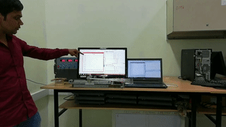

|
|
 |
The self-balancing robot is essentially an inverted pendulum. In this project, I
simulated non-linear mathematical models and implemented an LQR control in
MATLAB to balance the robot at upward position. I then implemented a Feedback
Linearization control for tracking the desired trajectory. Once I obtained stable
simulation results, I implemented these control techniques on real hardware to
validate simulation results.
[PDF | Video | Simulation File] |
|
|
|  |
|
 |
I implemented Energy based collocated partial feedback linearization control for Swing Up the Pendulum and LQR for balancing at upward position in MATLAB code. [PDF | Video | MATLAB Code] |
|
I implemented Energy based collocated partial feedback linearization control for Swing Up the Pendulum and LQR for balancing at upward position in MATLAB Simulink. [PDF | Video | Simulation File] |
|
The software I developed was a graphical user interface (GUI) that is for monitoring the response of robot and tuning the PID's gains in real-time. I used the conventional trial-and-error method for tuning the PID's gains for Line Following Robot. [Video] |
 |
A Model-Based Control design was used in this project. I first experimented on the DC motor by giving step input voltage to it and recording the output speed. Next, I estimated the first-order transfer function of the motor by using the SISO tool in MATLAB. Then, I used Control System Toolbox to design a PID controller. Lastly, using Automatic Code Generating in Simulink for all Arduino code, including control, sensor, and serial communication. [Video] |
|
Jitendra Singh, Prashant Singh 6th IEEE International Conference CERA, 2017
|